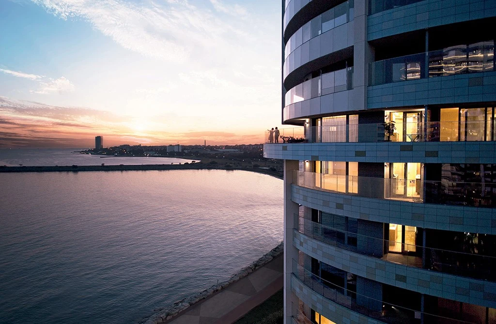

PROJECT OVERVIEW
SeaPearl Ataköy
A waterfront residential development on the Marmara coast in Ataköy, with apartments and shared landscaped spaces.
SettingMarmara waterfront
NeighbourhoodAtaköy
Photo gallery

Each gallery image is labelled by type. Architectural illustrations do not show the current construction condition; archive photographs are not a current status report.
EVERYDAY LIVING
Living spaces
Compare the specific apartment, orientation and view when requesting the available selection.
LOCATION AND ACCESS
Ataköy · Bakırköy · İstanbul
Located on the Ataköy coastline in Bakırköy, on Istanbul’s European side.
YOUR NEXT STEP
Choose your home
Request the current apartment selection, price and payment options. Compare the exact unit, view and included services before arranging your purchase.